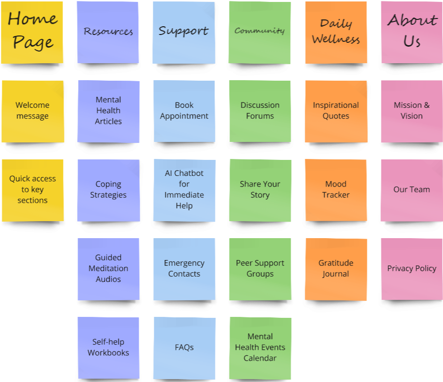

Our Site Map
This site map outlines the structure of our mental health platform, making it easier for users to navigate and find resources quickly.
In this exercise, I created a site map based on the card sort results. The goal is to create a user-friendly navigation structure.
This accordion shows the website structure. Expand each section to view pages and sub-pages, with notes on user/client needs.
Central hub for users to see and share inspiring content. Supports the client's goal of empowering users with knowledge and positivity.
THIS SHOULD BE YOUR ANNOTATION FOR YOUR WEBSITE A showcase of inspiring food gardens. Supports ...